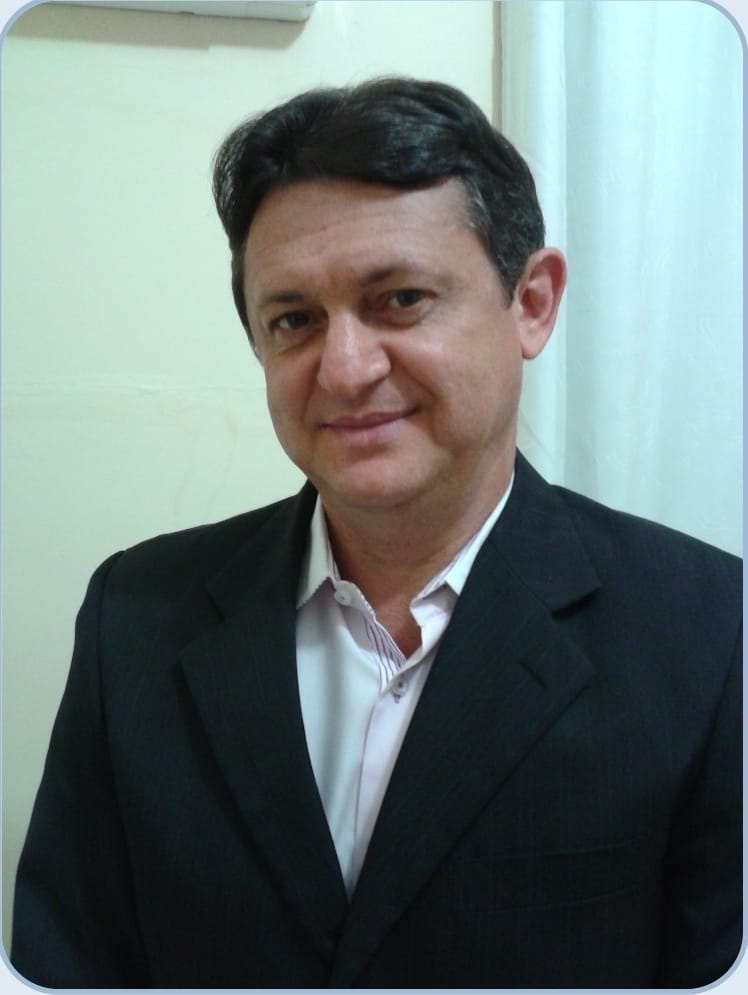

Doutor e Mestre em Educação com ênfase em Políticas Educacionais pela Universidade Federal do Pará (UFPA). É Professor Adjunto da Universidade do Estado do Pará (UEPA), onde trabalha na graduação e na Pós-Graduação. Integrou o Comitê Científico Interno. Coordena o Estágio Supervisionado do Curso de Licenciatura em Ciências da Religião e integra o corpo docente permanente do Programa de Pós-graduação em Ciências da Religião (PPGCR) orientando em nível de mestrado e doutorado. É Vice-Coordenador o Fórum Estadual de Educação do Pará (FEE/PA). Atua como membro Rede Internacional Interdisciplinar de Pesquisadores em Desenvolvimento de Territórios (Rede-TER). É membro da Associação Nacional de Política e Administração da Educação (ANPAE) e da Associação de Pós-graduação e Pesquisa em Teologia e Ciências da Religião (ANPTECRE).
Doutora em Educação (PPGED/UFPA), na Linha de Políticas Públicas Educacionais. Mestra em Educação (PPGED/UFPA). Especialista em Gestão Escolar pelo Centro Universitário do Pará - CESUPA e Licenciada em Pedagogia pela Universidade Federal do Pará. Professora da Universidade do Estado do Pará atuando na graduação e no Programa de Pós-graduação em Ciências da Religião (PPGCR) orientando em nível de mestrado e doutorado. Atua como membro Rede Internacional Interdisciplinar de Pesquisadores em Desenvolvimento de Territórios (Rede-TER), do Fórum Regional de Educação do Campo da Região Tocantina II - FORECAT II, membro da Associação Brasileira de Currículo, da Associação Nacional de Pesquisa em Financiamento da Educação e da Associação Brasileira de Alfabetização. É vinculada como colaboradora ao Programa de Pós-graduação em Currículo e Gestão da Escola Básica (PPEB-UFPA). É associada da Associação Internacional de Pesquisa na Graduação em Pedagogia (AINPGP), da Associação Nacional de Política e Administração da Educação (ANPAE) e da Associação Nacional de Pós-Graduação e pesquisa em Educação (ANPED).